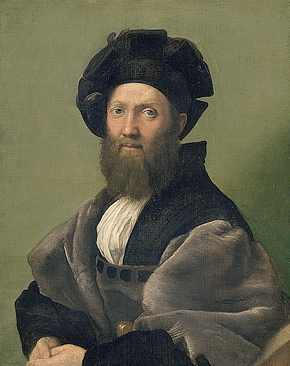

Raffaello Santi, llamado Raphael
1483-1520
Retrato de Baldessar Castiglione (1478-1529)
Lienzo
A 82 cm; L 67 cm
INV 611
El mecenazgo pontificio, que supo atraer a Roma durante largo tiempo a todos los maestros famosos desde Giotto, culmina cuando Julio II y León X son elegidos para la Santa Sede y retienen cerca de ellos a Bramante, a Miguel Angel y a Rafael (1508-1520). Valiente soldado y fino hombre de letras, Baldessar Castiglione es el parangón del gentilhombre del Renacimiento. Su "Tratado del Cortesano", publicado en 1528, refleja un ideal de perfección estética y espiritual muy cercana a la que Rafael alcanza con la pintura. Este retrato, que une la magnificencia del traje con la profundidad psicológica, es el mejor testigo de la amistad que unió a estos dos hombres.
ATRAS